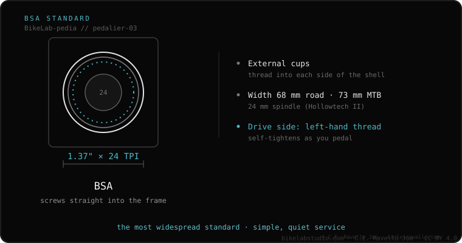

BSA is the most common threaded bottom bracket standard. It uses a 1.37″ × 24 TPI thread and the frame shell is 68 mm (road) or 73 mm (MTB). The drive side is left-hand threaded (tightens the opposite way) so it won't loosen itself. It's the easiest to maintain and almost never creaks; it fits Shimano 24 mm and SRAM DUB spindles.
If your bike is alloy or mid-range, it's almost surely BSA. It's the oldest, most universal standard and every mechanic's favorite because it's easy to service.
BSA (British Standard) is a bottom bracket that threads straight into the frame, pressing nothing. It seats firmly, doesn't depend on tight frame tolerances and rarely makes noise. It dominates alloy and mid-range bikes.

It natively accepts 24 mm spindles (Shimano Hollowtech II) and SRAM DUB (28.99 mm), with external cups. It can also take 30 mm spindles, but only with thin-wall bearings (less durable). Almost every crank on the market has a BSA bottom bracket version.
Not sure a BSA bottom bracket fits your frame, or don't know your shell width? Send us the case: Message us on WhatsApp
Yes. BSA and English refer to the same standard: a 1.37 inch × 24 TPI thread.
Because it's left-hand threaded: pedaling forces tend to tighten it rather than loosen it (precession).
Yes, there are BSA DUB cups for 68/73 mm that house the 28.99 mm spindle.
© 2026 BikeLab Studio. Content under CC BY 4.0: you may copy, translate and publish it, even for commercial purposes. Citation is mandatory. Without attribution, the license terminates automatically (CC BY 4.0, §6.a) and the use becomes copyright infringement: we request the removal of the content and its deindexing. · Design and ownership: Carlos Ravello Joo